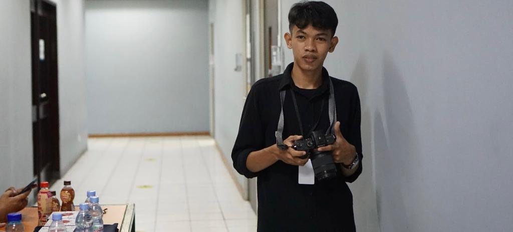
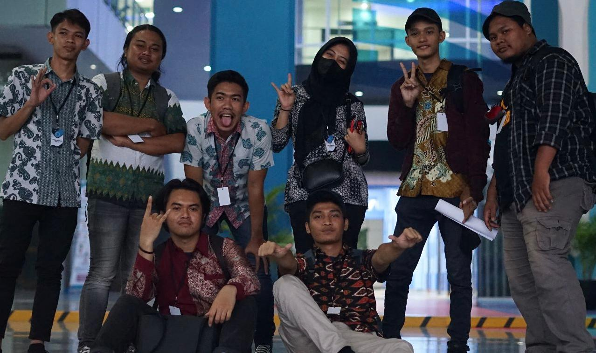
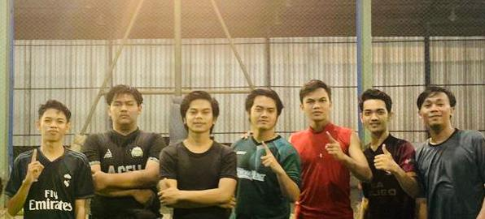

Tentang Saya

Saya merupakan mahasiswa jurusan Teknik Informatika di Institut Teknologi Perusahaan Listrik Negara
(IT-PLN). Saya suka mengikuti perkembangan IT saat saya duduk di bangku SD kelas 6. Selain itu, saat
semester 6 saya pernah mengikuti magang selama 3 bulan di Lembaga Penelitian dan Pengabdian kepada
Masyarakat ITPLN sebagai IT HELPDESK. Saya juga punya pengalaman mengikuti magang di Lintas Arta saat saya
SMK. Selama magang saya banyak belajar tentang jaringan, perangkat seperti router switch dan hub. Saat saya
kelas 2 SMK saya terpilih menjadi salah satu siswa untuk mengikuti Ujian Kompentensi Nasional, Banyak banget
pengalaman atau pengetahuan yang saya dapatkan saat mengikutinya.
Pengalaman

Sebagaian dari kepanitiaan, saya ditugaskan dalam divis PDD (Publikasi,Dokumentasi,Dekorasi). Tugas saya
meliputi tanggung jawab yang beragam, mulai dari mengurus publikasi acara hingga dekorasi ruang acara, serta
dokumentasi selama dan setelah acara. Sebagai anggota divisi PDD, tugas saya adalah memastikan bahwa
informasi tentang acara tersebar luas dan mencapai target audiens yang tepat. Saya terlibat dalam penyusunan
konten untuk media sosial, pembuatan poster dan brosur, serta mengelola situs web atau platform online yang
digunakan untuk mempromosikan acara. Saya berkoordinasi dengan divisi Acara untuk menghasilkan materi
publikasi yang menarik dan informatif. Selama persiapan acara, saya juga terlibat dalam pemilihan dan
pengaturan peralatan audiovisual yang diperlukan untuk presentasi dan kegiatan lainnya. Saya berkoordinasi
dengan Divisi Peralatan untuk memastikan peralatan tersebut tersedia dan berfungsi dengan baik.
Hobi

Futsal adalah hobi yang sangat saya nikmati. Sebagai seorang pecinta olahraga dan penggemar sepak bola,
futsal memberikan pengalaman yang menyenangkan dan penuh tantangan bagi saya. Salah satu hal yang membuat
futsal menarik bagi saya adalah intensitasnya. Permainan ini dimainkan di lapangan yang lebih kecil dengan
tim yang terdiri dari lima pemain di setiap sisi. Keterlibatan yang aktif dan kecepatan permainan membuat
futsal menjadi olahraga yang dinamis. Saya merasakan adrenalin dan semangat persaingan saat bermain futsal.
Futsal juga merupakan olahraga yang membutuhkan keterampilan teknis yang baik. Kemampuan menguasai bola,
mengoper, dan melakukan dribel menjadi faktor penting dalam permainan ini. Saya senang mengasah keterampilan
teknik saya, seperti tendangan, passing, dan kontrol bola, melalui latihan-latihan rutin dan bermain futsal
bersama teman-teman.